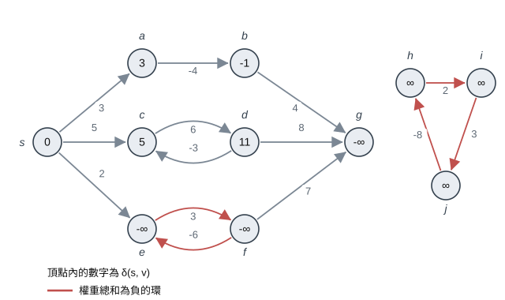
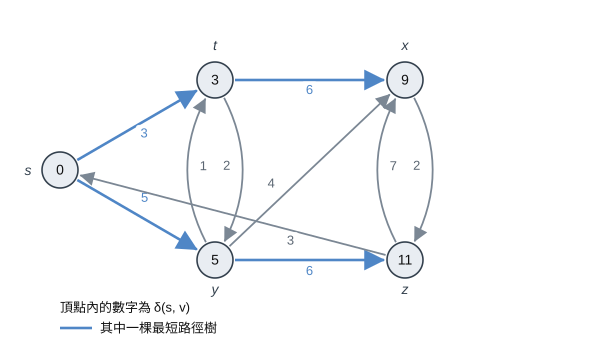
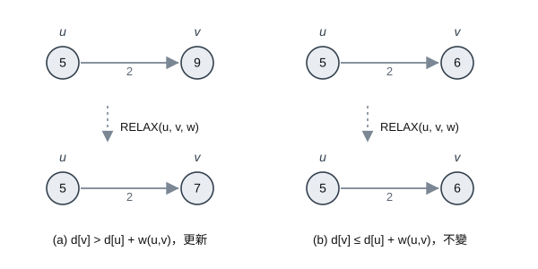
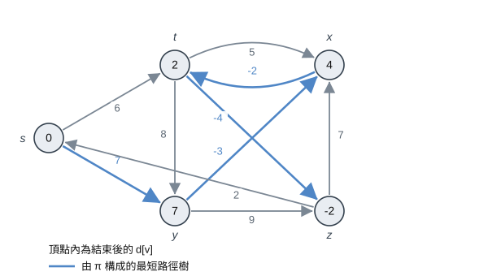
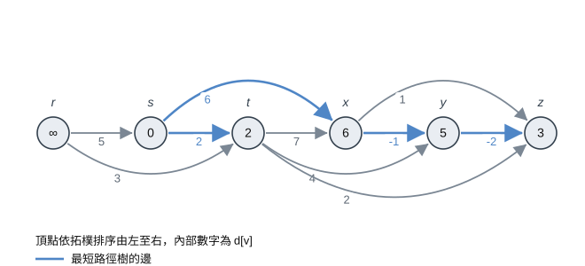
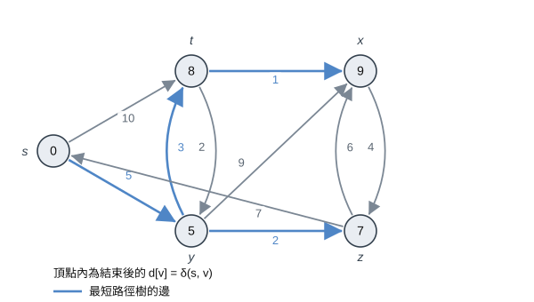
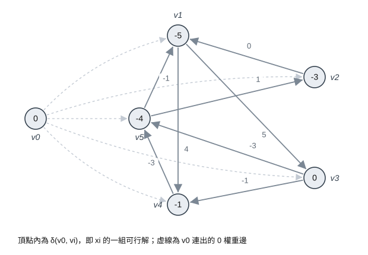

第一節 單源最短路徑
最短路徑最重要的性質是最佳子結構：最短路徑切下來的任何一段，本身也是最短路徑 (不然把那一段換成更短的走法，整條路就更短了，這樣就矛盾)。有最佳子結構就代表這題可以用動態規劃 (第十五章) 或貪心 (第十六章) 去解，後面的 Bellman-Ford 就是動態規劃的味道，Dijkstra 則是貪心
另外還有兩件之後會一直用到的事：對任何一條邊 $(u,v)$ 都有 $\delta(s, v) \le \delta(s, u) + w(u, v)$ (這叫三角不等式，繞去 $u$ 再走過來不會比較好)，以及最短路徑不會有環，所以最多只有 $|V| - 1$ 條邊
負權重邊與負權重環

權重是負的其實沒關係，真正會出事的是負權重環 (negative-weight cycle)：如果從 $s$ 走得到一個環，而這個環上的權重加起來是負的，那只要一直繞這個環，路徑權重就可以一直變小，這時候最短路徑根本不存在，我們定義 $\delta(s, v) = -\infty$
上圖頂點內的數字就是 $\delta(s, v)$。$e$ 跟 $f$ 形成的環權重是 $3 + (-6) = -3$，所以這兩點都是 $-\infty$；$g$ 自己不在環上，但它可以從 $f$ 走過來，所以也被拖成 $-\infty$。$c$ 跟 $d$ 之間也有環，但加起來是 $6 + (-3) = 3$，繞圈只會更差，所以不影響。至於 $h, i, j$ 上面雖然有一個 $-3$ 的負環，但從 $s$ 根本走不到，所以是 $\infty$ 而不是 $-\infty$
也就是只有從起點走得到的負環才會有問題。後面的 Dijkstra 是連負的邊都不能有，Bellman-Ford 則可以有負邊，而且還會順便告訴你有沒有這種負環
最短路徑樹

跟 BFS 一樣，每個頂點 $v$ 都存兩個東西：$d[v]$ 是目前已知從 $s$ 到 $v$ 的最短權重，但它只是一個估計值，演算法跑完後才會等於 $\delta(s, v)$；$\pi[v]$ 則是 $v$ 在最短路徑上的前一個頂點
把所有 $\pi$ 連起來就是一棵最短路徑樹，從 $s$ 沿著樹走到 $v$ 就是一條最短路徑，要印出來一樣可以用第二十二章的 PRINT-PATH
上圖粗線是其中一棵最短路徑樹。這裡要注意最短路徑樹跟最小生成樹一樣不唯一，例如 $x$ 的 $9$ 可以從 $t$ 走過來 ($3+6$)，也可以從 $y$ 走過來 ($5+4$)，兩種都是合法的
第二節 鬆弛 Relaxation
開始跑之前要先把估計值設好，除了起點自己是 $0$ 以外，其他點都先當作走不到：
INITIALIZE-SINGLE-SOURCE(G, s) |
Pseudocode
RELAX(u, v, w) |
說明

鬆弛一條邊 $(u,v)$ 就是問一句話：先走到 $u$ 再走 $(u,v)$ 過來，會不會比我現在知道的走法更短？ 如果 $d[u] + w(u,v)$ 比 $d[v]$ 小，就把 $d[v]$ 改小，順便把 $\pi[v]$ 記成 $u$ (代表現在最好的走法是從 $u$ 過來)，不然就什麼都不做。上圖 (a) 的 $d[v] = 9 > 5 + 2$ 所以更新成 $7$；(b) 的 $d[v] = 6 \le 5 + 2$，維持不變
這個動作有一個很重要的性質：$d[v]$ 只會越來越小，而且一旦變成 $\delta(s,v)$ 就不會再被改了。更重要的是，只要一條最短路徑上的邊有照順序被鬆弛過，那條路徑的終點就一定算對，中間夾雜其他邊的鬆弛也沒關係
<註> 這就是後面三個演算法正確性的來源。我們不用剛好只鬆弛「對的邊」，剩下的問題就只是要用什麼順序、鬆弛幾次而已
第三節 Bellman-Ford 演算法
前面說過最短路徑最多 $|V| - 1$ 條邊。每把所有邊掃過一輪，至少可以確定最短路徑上的下一條邊被鬆弛到，所以掃完 $k$ 輪，所有只需要 $k$ 條邊的最短路徑就都算對了，跑滿 $|V| - 1$ 輪就全部都對
Pseudocode
BELLMAN-FORD(G, w, s) |
說明

前面兩層迴圈就是所有邊鬆弛 $|V|-1$ 輪，最後那一次 (第 5～7 行) 不是在算答案，而是在檢查：都已經跑滿 $|V|-1$ 輪了，居然還有一條邊可以再變短，那就代表路徑上有環而且是負的，直接回傳 FALSE；不然就回傳 TRUE，此時的 $d$ 就是答案
上圖有 5 個頂點所以要跑 4 輪，假設每輪鬆弛的順序都固定是
$(t,x), (t,y), (t,z), (x,t), (y,x), (y,z), (z,x), (z,s), (s,t), (s,y)$，過程如下：
| 回合 | $d[s]$ | $d[t]$ | $d[x]$ | $d[y]$ | $d[z]$ |
|---|---|---|---|---|---|
| 初始 | 0 | $\infty$ | $\infty$ | $\infty$ | $\infty$ |
| 第 1 輪 | 0 | 6 | $\infty$ | 7 | $\infty$ |
| 第 2 輪 | 0 | 6 | 4 | 7 | 2 |
| 第 3 輪 | 0 | 2 | 4 | 7 | 2 |
| 第 4 輪 | 0 | 2 | 4 | 7 | $-2$ |
第 1 輪只有 $t$ 跟 $y$ 被更新，因為其他點還是 $\infty$，$\infty$ 加上任何數還是很大，鬆弛不動，要等下一輪才會再往外傳一層。最後 $d[t] = 2$ 走的是 $s \to y \to x \to t$ ($7 - 3 - 2$)，比直接走 $s \to t$ 的 $6$ 還短，這就是有負邊的時候會發生的事，也是為什麼不能像下面的 Dijkstra 一樣確定了就不再改
複雜度
- 初始化：$O(V)$
- 主迴圈跑 $|V| - 1$ 輪，每輪掃過所有的邊 $O(E)$
- 最後檢查負環再掃一次所有的邊：$O(E)$
整體時間複雜度為：
$$O(V) + O(VE) + O(E) = O(VE)$$
第四節 DAG 上的最短路徑
DAG 沒有環，當然也不會有負權重環，所以負邊完全沒問題。而且拓撲排序保證處理到 $u$ 的時候，所有可以走到 $u$ 的頂點都已經處理完了，$d[u]$ 早就是最後的答案，這時候才去鬆弛 $u$ 的出邊剛剛好。拓撲順序本身就是那個「照順序鬆弛」的順序，所以掃一次就夠了
Pseudocode
DAG-SHORTEST-PATHS(G, w, s) |
說明

上圖的頂點已經照拓撲排序由左排到右 ($r, s, t, x, y, z$)，起點是 $s$。$r$ 排在 $s$ 前面，從 $s$ 走不到它，所以 $d[r]$ 一直是 $\infty$，鬆弛它的出邊也不會更新到任何人
接著處理 $s$ 得到 $d[t] = 2$、$d[x] = 6$；處理 $t$ 時 $d[x]$ 沒有變小 ($2+7 > 6$)，但 $d[y] = 6$、$d[z] = 4$；處理 $x$ 時 $d[y]$ 被改成 $6-1 = 5$；最後處理 $y$，$d[z]$ 變成 $5-2 = 3$。每個頂點只被當成 $u$ 處理一次，每條邊也只鬆弛一次就結束了
<註> 這個做法拿來排工程進度 (PERT chart) 很好用，把邊的權重都乘上 $-1$ 再求最短路徑，就等於在求 DAG 上的最長路徑，也就是整個專案的關鍵路徑
複雜度
- 拓撲排序 (第二十二章的 DFS)：$\Theta(V + E)$
- 初始化：$\Theta(V)$
- 外層跑過每個頂點、內層總共鬆弛每條邊一次：$\Theta(E)$
整體時間複雜度為：
$$\Theta(V + E)$$
只要圖是 DAG 就用這個，沒必要用 Bellman-Ford
第五節 Dijkstra 演算法
Dijkstra 維護一個集合 $S$，裡面放已經確定 $d[v] = \delta(s,v)$ 的頂點，剩下的都放在以 $d$ 為鍵值的最小優先佇列 (Min-Priority Queue) $Q$ 裡面，整個結構跟第二十三章的 Prim 幾乎一樣
Pseudocode
DIJKSTRA(G, w, s) |
說明

EXTRACT-MIN(Q) 每次取出 $d$ 最小的頂點 $u$ 丟進 $S$，代表 $d[u]$ 就是最後的答案不會再變，接著鬆弛 $u$ 的所有出邊，看看鄰居能不能更短。每個頂點只會被取出來一次，所以每條邊也只會被鬆弛一次
上圖從 $s$ 出發，取出的順序是 $s(0) \to y(5) \to z(7) \to t(8) \to x(9)$：取出 $s$ 後 $d[t] = 10$、$d[y] = 5$；取出 $y$ 後 $d[t]$ 被改成 $5+3 = 8$、$d[x] = 14$、$d[z] = 7$；取出 $z$ 後 $d[x] = 13$；取出 $t$ 後 $d[x]$ 再變成 $8+1 = 9$。注意 $d[t]$ 一開始是 $10$，後來被 $y$ 改成 $8$，但 $t$ 一旦被取出來就不會再變了
那為什麼權重不能是負的？假設 $u$ 被取出來的時候 $d[u]$ 還不是答案，那真正的最短路徑一定會在某個地方離開 $S$，設離開後的第一個頂點是 $y$。$y$ 排在 $u$ 前面，而在權重非負的前提下後面那段路不會是負的，所以 $d[y] \le d[u]$，EXTRACT-MIN 應該要先挑到 $y$ 才對，矛盾
整段推論唯一用到非負的就是「後面那段路不會是負的」這句。如果可以有負邊，先確定的頂點之後還是會再變短，「確定了就不再改」這個貪心就壞掉了，那種情況只能改用 Bellman-Ford
複雜度
整個過程做了 $|V|$ 次 EXTRACT-MIN，以及最多 $|E|$ 次的鬆弛 (每次可能是一個 DECREASE-KEY)，所以看優先佇列怎麼實作：
- 用陣列線性找最小值：
EXTRACT-MIN要 $O(V)$、DECREASE-KEY是 $O(1)$，合計 $O(V^2 + E) = O(V^2)$ - 用 Min-Heap：兩個操作都是 $O(\lg V)$，合計 $O((V + E) \lg V) = O(E \lg V)$
- 用費氏堆積 (Fibonacci Heap)：
DECREASE-KEY攤還後是 $O(1)$，合計 $O(V \lg V + E)$
所以稠密圖 ($E$ 接近 $V^2$) 用陣列反而比較好，稀疏圖用 Min-Heap 比較好，這個取捨跟 Prim 是一樣的
第六節 差分約束系統
最後補一個最短路徑的應用。差分約束系統 (system of difference constraints) 就是一堆長成 $x_j - x_i \le b_k$ 的不等式，每一條都只牽涉到兩個變數的差，例如下面這組 (5 個變數、8 個限制)：
$$ \begin{aligned} x_1 - x_2 &\le 0, & x_1 - x_5 &\le -1, & x_2 - x_5 &\le 1, & x_3 - x_1 &\le 5,\\ x_4 - x_1 &\le 4, & x_4 - x_3 &\le -1, & x_5 - x_3 &\le -3, & x_5 - x_4 &\le -3 \end{aligned} $$

把 $x_j - x_i \le b_k$ 移項變成 $x_j \le x_i + b_k$，就會發現它跟三角不等式 $\delta(v_0, v_j) \le \delta(v_0, v_i) + w(v_i, v_j)$ 長得一模一樣，所以可以直接當成圖來解：每個變數 $x_i$ 是一個頂點 $v_i$，每條限制是一條權重 $b_k$ 的邊 $(v_i, v_j)$，再加一個頂點 $v_0$ 拉權重 $0$ 的邊到每個 $v_i$ (確保所有點都走得到)，這張圖叫約束圖 (constraint graph)
上圖就是這組限制的約束圖，頂點內的數字是 $\delta(v_0, v_i)$，也就是一組解 $x = (-5, -3, 0, -1, -4)$，代回去每條限制都會成立。負環無解也很好理解，一個負環上那幾條限制式加起來會變成 $0 \le$ 一個負數，這顯然不可能
因為會有負邊，所以要用 Bellman-Ford 解。$n$ 個變數、$m$ 條限制的話，約束圖有 $n+1$ 個頂點跟 $n+m$ 條邊，時間複雜度是 $O((n+1)(n+m)) = O(n^2 + nm)$。像「工作 $j$ 至少要在工作 $i$ 開始後 3 小時才能開始」這種排程限制，就可以直接寫成差分約束丟給它解
總結
| 演算法 | 適用的圖 | 負權重邊 | 鬆弛的順序 | 時間複雜度 |
|---|---|---|---|---|
| BFS (第 22 章) | 沒有權重的圖 | — | 依距離一層一層 | $O(V + E)$ |
| Bellman-Ford | 一般有向圖 | 可以，還能偵測負環 | 所有邊重複 $V-1$ 輪 | $O(VE)$ |
| DAG-Shortest-Paths | 有向無環圖 | 可以 | 依拓撲排序掃一次 | $\Theta(V + E)$ |
| Dijkstra | 權重非負的圖 | 不行 | 每次挑 $d$ 最小的頂點 | $O(E \lg V)$ |
- 三個演算法的骨架完全一樣，都是
INITIALIZE-SINGLE-SOURCE之後不停地RELAX，差別只在用什麼順序鬆弛、鬆弛幾次 - Dijkstra 是貪心，結構跟第二十三章的 Prim 幾乎一樣，只是 $d[v]$ 存的是累加的路徑權重，速度最快但不能有負邊；Bellman-Ford 慢但最通用，還可以偵測負權重環；圖如果是 DAG，拓撲排序後掃一次就結束
參考文獻
T. H. Cormen, C. E. Leiserson, R. L. Rivest, and C. Stein, Introduction to Algorithms, Second Ed., The MIT Press, 2001.